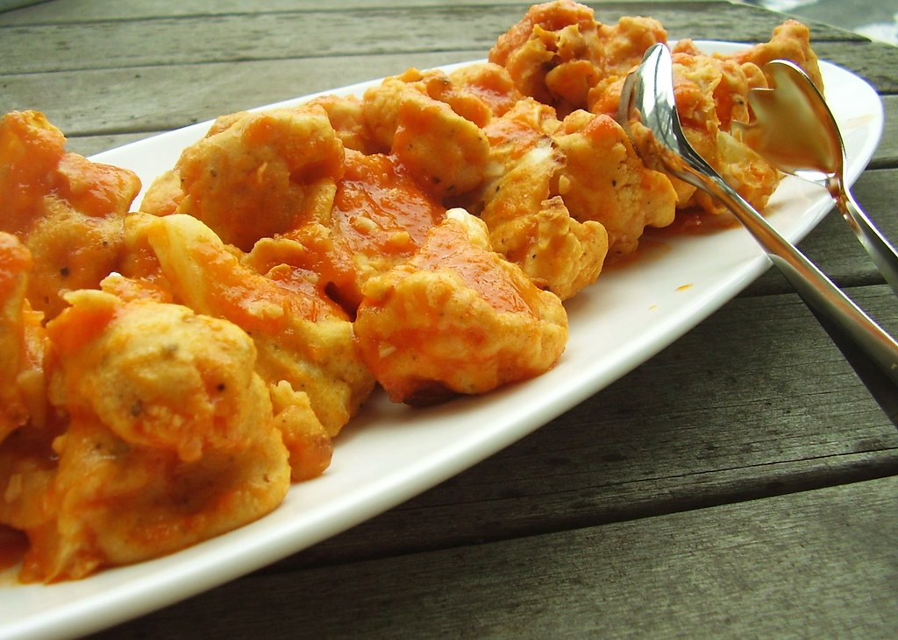
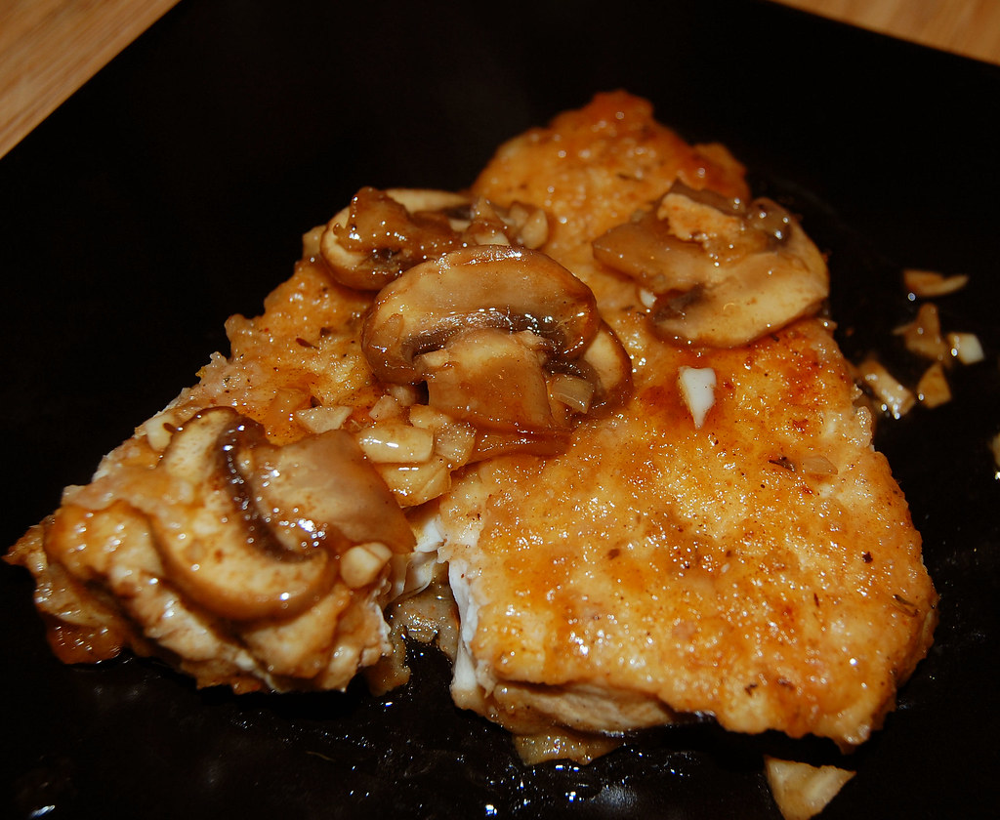
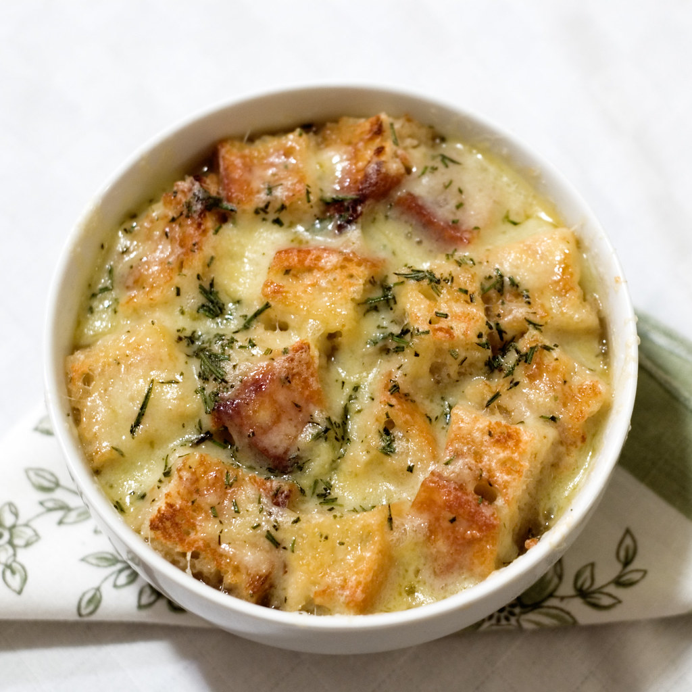

Buffalo Cauliflower

Buffalo Cauliflower is my favorite appetizer to make! Follow these easy steps.
- Cut up a head of cauliflower and wash it
- Coat in panko bread crumbs and egg
- Bake at 400 degrees for 18 minutes and coat in buffalo sauce
Chicken Marsala

Chicken Marsala is a recipe I made over the summer. It is super tasty and fun!
- Season boneless chicken breasts
- Bread and flour
- Pan sear and bake until chicken is done and then cover with red wine and mushrooms
French Onion Soup

French Onion Soup is the perfect comfort food
- Carmelize 15 yellow onions
- Make beef broth
- Melt gruyere cheese and croutons on top